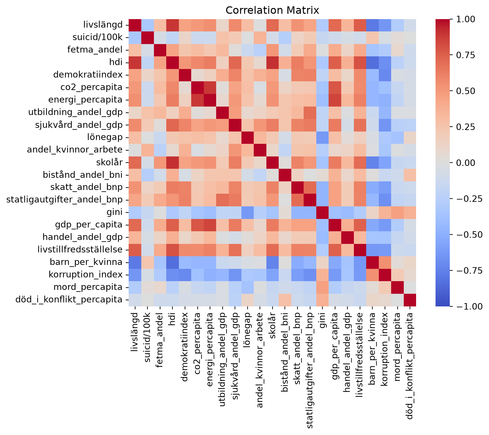

| Variabel | Beskrivning |
|---|---|
| livslängd | Medellivslängd |
| suicid_100k | Antal suicid per 100 000 invånare |
| fetma_andel | Andel personer med fetma i befolkningen |
| hdi | Human Development Index (HDI) |
| demokratiindex | Indexvärde för hur demokratiska länders valprocesser är på en skala mellan 0 och 1 |
| co2_percapita | CO₂-utsläpp per capita |
| energi_percapita | Energianvändning per capita |
| utbildning_andel_gdp | Utbildningsutgifter som andel av BNP |
| skatt_andel_bnp | Skatteintäkter som andel av BNP |
| statligautgifter_andel_bnp | Statliga utgifter som andel av BNP |
| gini | Gini-koefficient – ett mått på ekonomisk ojämlikhet på en skala mellan 0 och 1 |
| gdp_per_capita | BNP per capita |
| handel_andel_gdp | Handel som andel av BNP |
| livstillfredsställelse | Genomsnittlig livstillfredsställelse på en skala mellan 0 och 10 |
| barn_per_kvinna | Genomsnittligt antal födda barn per kvinna |
| korruption_index | Indexvärde för upplevd politisk korruption på en skala mellan 0 och 1 |
| mord_percapita | Antal mord per capita |
| död_i_konflikt_percapita | Antal döda i konflikter per capita |
Explorativ analys
Databearbetning
Analyserna är gjorda för antingen 2021 eller 2022, då dessa år var de år där flest länder hade tillgängliga data för de variabler som analyserades.
Beskrivning av analysens variabler
Korrelationsanalys
För att identifiera övergripande samband mellan indikatorerna skapades en korrelationsmatris.

Det finns många samband som hade kunnat undersökas vidare, men i detta projekt fokuserade jag på nedanstående tre samband:
- Gini-koefficienten (ett mått på ekonomisk ojämlikhet, där en högre siffra innebär större ojämlikhet) uppvisade ett negativt samband med lönegap mellan könen (alltså - högre ekonomisk ojämlikhet = lägre lönegap mellan könen).
- Gini-koefficienten uppvisade även ett negativt samband med BNP per capita (högre ekonomisk ojämlikhet = lägre BNP per capita).
- Samtidigt noterades ett positivt samband mellan BNP per capita och lönegap mellan könen (högre BNP per capita = större lönegap mellan könen)
Ovanstående samband väckte en frågeställning kring hur det kan komma sig att en ökad ekonomisk ojämlikhet kan vara associerat med ett minskat lönegap mellan könen, samtidigt som ekonomiskt utvecklade länder med större ekonomisk jämlikhet hade förhållandevis större lönegap mellan könen.
Datavisualisering
Samband mellan gini-koefficient och lönegap mellan könen
Ett första steg var att visualisera hur det kommer sig att ekonomisk ojämlikhet totalt sett hänger samman med könsskillnader i löner.
Diagrammet visar en tydlig negativ trend där en högre Gini-koefficient tenderar att sammanfalla med mindre löneskillnader mellan kvinnor och män - eller snarare en negativ skillnad, vilket enligt detta mått innebär att kvinnor tjänar mer än män i genomsnitt.
När man granskar de länder som befinner sig på eller nedanför 0-strecket kan man notera att de tenderar att vara låg- eller medelinkomstländer.
Samband mellan BNP per capita och Gini-koefficient
Därefter undersöktes sambandet mellan länders BNP per capita och deras Gini-koefficient.
Figuren visar att de länder med högst Gini-koefficienter tenderar vara medelinkomstländer, medan de rikaste länderna ofta uppvisar en lägre ekonomisk ojämlikhet än snittet.
Samband mellan BNP per capita och lönegap
Slutligen undersöktes sambandet mellan BNP per capita och könsskillnader i genomsnittslön.
Resultatet visar att lönegapet inte följer en linjär utvecklingskurva. Positiva lönegap (män tjänar mer än kvinnor) återfinns främst allt bland låg- och höginkomstländer, medan många av medelinkomstländerna snarare har ett negativt lönegap (kvinnor tjänar mer än män).
Reflektion kring resultaten
De ovanstående figurerna ger en bra bild av hur det kommer sig att dessa samband finns mellan GDP per capita, Gini-koefficienten och lönegap mellan könen.
Svaret ligger i att medelinkomstländer tenderar ha både en högre gini-koefficient och ett lägre lönegap än låg- och höginkomstländer. Detta innebär att förhållandet alltså inte är “ju rikare land, desto högre lönegap och mindre ekonomisk ojämlikhet”, utan snarare att skillnaden just finns mellan medel- och höginkomstländer.
Efter vidare undersökning kring hur det kommer sig att medelinkomstländer sticker ut identifierades ett resonemang kring att det kan ha att göra med att kvinnors deltagande på arbetsmarknaden förändras när man går från låg- till medelinkomstland där arbetsmarknaden blir mer avancerad, och att det i det första skedet framför allt är kvinnor med hög utbildning och hög socioekonomisk status som deltar i arbetsmarknaden. När fler kvinnor kommer in i arbetsmarknaden förändras sedan sammansättningen av gruppen kvinnliga arbetstagare, vilket leder till att lönegapet mellan könen ökar i förhållande till när det endast var “högkvalificerade” kvinnor som deltog i arbetsmarknaden.
Denna förklaringsmodell stärks eventuellt när man visualiserar andel kvinnor i arbete i förhållande till män, där man ser att kvinnors arbetsdeltagande är lägst i medelinkomstländer, för att sedan öka med ökad GDP per capita.